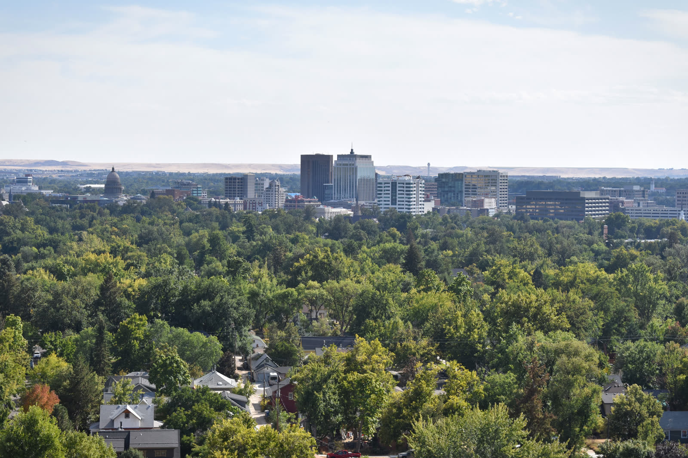

Boise, Idaho
Where the Rockies Meet Reformed Roots — Adventure, Education, and Community in the Treasure Valley

Overview
Boise is the capital and largest city in Idaho, anchoring the Treasure Valley -- a rapidly growing metro of 770,000 that combines mountain-west lifestyle with a surprisingly deep Reformed Christian community. Named a National Geographic Top 25 Destination, Boise offers 190+ miles of foothills trails out the back door, a ski resort 16 miles from downtown, and world-class fishing on the Boise River and nearby reservoirs.
The premier educational draw is The Ambrose School, an ACCS classical Christian school with 900 students across three campuses serving K-12. With Latin and Greek instruction, a rigorous classical curriculum, and 95% of graduates attending four-year colleges, Ambrose is one of the largest and most established ACCS schools in the country. Petra Christian Academy (K-9) provides an additional classical option for younger students.
The Reformed church presence is strong for a western city -- 10 congregations spanning 3 PCA, 2 CREC, 1 RPCNA, and several independent Reformed churches. There is no OPC congregation in Boise. The broader conservative Idaho culture, combined with a cost of living just 2% above the national average and low property taxes, makes the Treasure Valley an attractive package. Idaho's flat 5.3% income tax is moderate, but the overall affordability and quality of life create strong value.
Scores
How Boise ranks across all six evaluation categories (1-10 scale). Weighted overall: 7.85 / 10.
Cost of Living
Overall index 102 -- just 2% above the national average, making Boise one of the more affordable options in the comparison set.
| Category | Index | Notes |
|---|---|---|
| Overall | 102 | 2% above national average |
| Housing | 115 | Primary cost driver, moderated from 2022 peak |
| Transportation | 105 | Car-dependent but reasonable |
| Groceries | 100 | At national average |
| Utilities | 94 | Below national average, low energy costs |
Flat rate on all income
State rate, no local additions
Well below national average
Idaho's flat 5.3% income tax is moderate, but low property taxes are a significant advantage for homeowners. The 6% sales tax has no local additions, keeping retail costs predictable. With a median household income of $81,308 -- above the national median -- Boise families have solid purchasing power relative to the cost of living. Utilities run below the national average thanks to affordable hydroelectric power. The overall cost picture is considerably better than Coeur d'Alene to the north (index 115) or western mountain peers like Bozeman and Bend.
Housing and Land
Median home price $500K -- moderate for a western metro, with good options in surrounding communities.
Housing index 115
Above national median
| Area | Price Range | Family Rating | Notes |
|---|---|---|---|
| Eagle | $550K-$800K+ | Excellent | Horse properties available, upscale family community, close to foothills |
| Star | $425K-$600K | Good | Rural feel, horse-friendly properties, growing families |
| Meridian | $425K-$550K | Excellent | Largest suburb, strong schools, family-oriented neighborhoods |
| Nampa/Caldwell | $350K-$450K | Good | Most affordable in the valley, agricultural areas with acreage |
| North End / East Boise | $500K-$700K | Good | Walkable, close to foothills trails, established neighborhoods |
Land, Acreage, and Equestrian
The Treasure Valley offers good equestrian options, particularly in Eagle and Star where horse properties are common. Boise National Forest provides extensive trail riding access, and Dry Creek Ranch area offers dedicated equestrian facilities. Idaho's agricultural zoning is permissive -- many properties in Eagle, Star, and the western valley allow livestock without special permits. For families wanting acreage with horses, the Star/Eagle corridor provides the best combination of horse-friendly land with proximity to Boise amenities and schools like The Ambrose School.
The western valley communities of Nampa and Caldwell offer the most affordable land and larger parcels, while Meridian provides a middle ground of suburban convenience with some acreage lots on the periphery.
Education
Score: 9/10 -- The Ambrose School (ACCS, 900 students) is a premier classical Christian draw, with strong homeschool community and permissive Idaho laws.
Classical Christian Schools
| School | Grades | Students | Affiliation | Notes |
|---|---|---|---|---|
| The Ambrose School | K-12 | 900 | ACCS | Three campuses. Latin and Greek instruction. 95% of graduates attend four-year college. One of the largest ACCS schools in the country. Rigorous classical curriculum with strong parent community. |
| Petra Christian Academy | K-9 | -- | Classical Christian | Smaller classical option for younger students. Christ-centered classical education. |
Homeschool Community
Idaho has some of the most permissive homeschool laws in the country -- no notification to the state is required, no curriculum approval, no standardized testing. This has attracted a very strong homeschool community to the Boise area.
| Organization | Type | Notes |
|---|---|---|
| Classical Conversations - Boise | Classical Christian | Multiple communities in the Treasure Valley |
| CHOIS (Christian Homeschoolers of Idaho State) | Christian | Statewide support network, annual convention in Boise |
| Treasure Valley Homeschool Co-ops | Support | Multiple co-ops across Boise, Meridian, Eagle, and Nampa |
Notable Mention
The Ambrose School is a standout -- at 900 students across three campuses, it is one of the largest ACCS schools in the nation. The school's emphasis on Latin and Greek, combined with the 95% four-year college attendance rate, makes it a genuine draw for families prioritizing classical Christian education. The built-in community of 900 families creates a substantial social network beyond the school itself.
Boise State University provides local higher education, and the College of Idaho in Caldwell is a respected private liberal arts college.
Faith
Score: 7/10 -- 10 Reformed congregations across PCA, CREC, RPCNA, and independent Reformed. No OPC.
| Church | Denomination | Notes |
|---|---|---|
| PCA (3 congregations) | ||
| All Saints Presbyterian Church | PCA | Meridian. Merged from two 1996 church plants (East River & Valley West). Meets at The Ambrose School. |
| Boise Presbyterian Church | PCA | Downtown Boise. Church plant by All Saints Presbyterian. |
| Christ Presbyterian Church | PCA | PCA congregation in the Treasure Valley. |
| CREC (2 congregations) | ||
| The King's Congregation | CREC | Meridian. Founded 2003, Pastor Alan Burrow. Kuyperian, postmillennial tradition. |
| King's Covenant Church | CREC | Nampa. Mission church of The King's Congregation, Pastor Nathan Dowd. |
| RPCNA (1 congregation) | ||
| Treasure Valley Reformed Presbyterian Church | RPCNA | Meridian. Planted June 2021 by Seattle RPCNA, Pastor Ryan Hemphill. Exclusive psalmody, covenanter tradition. |
| Other Reformed (several) | ||
| Providence United Reformed Church | URC | Meridian. United Reformed Churches in North America. |
Boise's Reformed church presence is notably strong for a western city -- 7+ congregations spanning PCA, CREC, RPCNA, and URC traditions. The 3 PCA churches (anchored by All Saints, est. 1996) give confessionally Reformed families multiple options, while the RPCNA presence is relatively rare outside of larger eastern metros. There is no OPC congregation in Boise.
The broader evangelical community is robust, as expected in conservative Idaho. The combination of Reformed churches and the 900-student Ambrose School creates a substantial Reformed-adjacent community network. Families seeking confessional Reformed worship will find more options here than in most western cities of comparable size.
Lifestyle
Score: 9/10 -- Outstanding outdoor recreation, 210 sunny days, NatGeo Top 25 Destination, very dry climate.
Climate
| Season | High | Low | Character |
|---|---|---|---|
| Spring | 62F | 37F | Dry, warming, wildflowers in the foothills |
| Summer | 91F | 58F | Hot, dry, long daylight, peak outdoor season |
| Fall | 60F | 38F | Crisp, golden cottonwoods, ideal hiking |
| Winter | 38F | 25F | Mild snow (18 inches), cold but dry |
Very dry high-desert climate
Outstanding for a four-season climate
Light snow in valley, heavy at Bogus Basin
Outdoor Recreation
| Activity | Quality | Details |
|---|---|---|
| Hiking | 5/5 | 190+ miles Ridge to Rivers trail system, Boise foothills, Boise National Forest |
| Skiing | 4/5 | Bogus Basin -- 16 miles from downtown, 2,600 acres, night skiing |
| Mountain Biking | 5/5 | World-class singletrack in the foothills, hundreds of miles of trails |
| Fishing | 5/5 | Boise River (trout), Lucky Peak Reservoir, South Fork Boise, world-class fly fishing |
| Equestrian | 4/5 | Eagle/Star horse properties, Boise NF trails, Dry Creek Ranch area |
Very dry (11in rain, 12in snow). 210 sunny days.
National Geographic Top 25 Destination
Community
Score: 9/10 -- Strong family community, conservative Idaho culture, excellent schools, and deep outdoor culture.
Metro area ~770K
Above national median
Drives outdoor lifestyle culture
| Factor | Rating |
|---|---|
| Family Friendliness | Excellent |
| Homeschool Community | Very Strong |
| Conservative Presence | Strong |
| Classical School Community | Excellent (900-student Ambrose) |
| Remote Work Friendly | High |
Boise's Treasure Valley metro (~770K) is large enough to offer genuine urban amenities -- an airport with direct flights, regional healthcare, a vibrant downtown -- while maintaining the conservative Idaho culture and family-oriented community that draws relocating families. The combination of The Ambrose School's 900-family community and 10 Reformed churches creates an unusually deep network for a western city.
The outdoor lifestyle is central to community identity. With 190+ miles of Ridge to Rivers trails accessible from residential neighborhoods, Bogus Basin ski resort 16 miles from downtown, and world-class fishing on the Boise River, the Treasure Valley attracts families who want to be active outdoors year-round. The 210 sunny days and very dry climate (11 inches of rain, 18 inches of snow) make outdoor recreation accessible most of the year.
Conservative Idaho culture is the backdrop -- gun-friendly, low regulation, family values. Boise is more politically diverse than North Idaho (it is the state capital and a college town), but Ada County remains conservative overall and the surrounding Treasure Valley communities of Eagle, Star, Meridian, and Nampa are solidly right-leaning.
Pros and Cons
Advantages
- The Ambrose School -- 900-student ACCS classical Christian school with 95% four-year college attendance, one of the best in the nation
- 10 Reformed churches across PCA, CREC, RPCNA, and independent traditions -- unusually strong for a western city
- 190+ miles of Ridge to Rivers foothills trails, Bogus Basin skiing 16 miles from downtown, world-class fishing
- 210 sunny days and very dry climate (11 inches rain, 18 inches snow) -- outstanding for year-round outdoor activity
- Cost of living index 102 -- only 2% above national average, much better than Coeur d'Alene (115), Bozeman, or Bend
- Median household income $81,308 above the national median, providing solid purchasing power
- Low property taxes and Idaho's permissive homeschool laws (no notification, testing, or approval required)
- Good equestrian options in Eagle/Star with horse properties and Boise National Forest trail riding
- NatGeo Top 25 Destination -- nationally recognized quality of life
Disadvantages
- Median home price of $500K is above the national average, though moderate for a western metro
- 5.3% flat income tax is moderate -- worse than Tennessee (0%), Florida (0%), and Wyoming (0%)
- No OPC congregation for families specifically seeking that denomination
- Boise is more politically diverse than rural Idaho -- not as uniformly conservative as Coeur d'Alene or Sheridan
- Hot, dry summers (highs above 90F) may not appeal to families preferring cooler climates
- Rapid metro growth (770K) is changing the character of some formerly rural communities
- Limited direct flight options compared to larger western metros like Salt Lake City or Denver
- Very dry landscape -- 11 inches of rain creates brown, arid surroundings much of the year
External Links
| Resource | Link |
|---|---|
| City of Boise | cityofboise.org |
| The Ambrose School | theambroseschool.org |
| Ridge to Rivers Trail System | ridgetorivers.org |
| Bogus Basin Mountain Recreation Area | bogusbasin.org |
| Boise Metro Chamber of Commerce | boisechamber.org |
| Ada County | adacounty.id.gov |